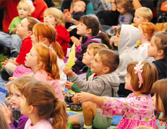
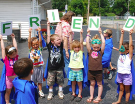
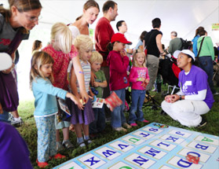
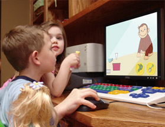
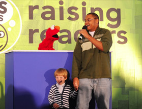
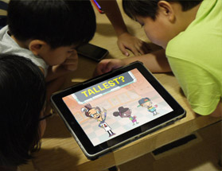
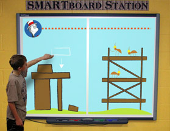
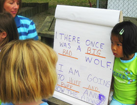

Ready To Learn (RTL) promotes early learning through age-appropriate, educational and engaging content for children ages 2-8. Through long-standing partnerships with producers, advisors, education and content experts, and practitioners, RTL has created a wealth of age-appropriate content that research and ratings have proved to be superlative.
- Low-income children are better prepared for success in kindergarten when their preschool teachers incorporate educational video and games from public media's Ready To Learn initiative, according to a study conducted by the Education Development Center, Inc. (EDC) and SRI International.
- All RTL content is guided by a math skill framework and a literacy skill framework based on the state's Common Core standards and developed and created by the nation's most trusted educational advisors.
- Ratings and online analytics show that RTL programs like Curious George, Super Why, Dinosaur Train and Sid the Science Kid are the most watched shows in the children's television industry.
- RTL has funded award-winning children's series focused on reading: Super Why, Martha Speaks, The Electric Company, Sesame Street, Between the Lions, and WordWorld.
- RTL has funded several games focused on math and literacy from Curious George, Dinosaur Train, FETCH! with Ruff Ruffman, Fizzy's Lunch Lab, Sid the Science Kid, Super Why!, The Cat in the Hat Knows a Lot About That!, and The Electric Company.
- PBS KIDS Island, recipient of a Parents' Choice Gold Award, was also given the "Editor's Choice Award" by Children's Technology Review, one of the industry's leading authorities on technology products for children from birth to age 15.
"PBS KIDS Island packs a lot of educational value into an easy-to-use, fun and (gasp) advertising-free service. If you teach early readers, or live with one, this site is certainly worth your bookmark."
Children's Technology Review

Ready To Learn is driven by its mission of reaching children everywhere, particularly those from underserved communities.
- Every month, RTL reaches 13 million unique visitors online and provides 111 million free video streams.
- RTL programming finds its largest audience in low-income households: Hispanic, African-American and low-income homes represent a disproportionately higher percentage of PBS KIDS viewers and online visitors compared to their representation in the U.S. population (Nielsen Television Index, 2008-09; Google Analytics; 2009).
- More than 56% of children ages 2–5 have tuned into at least one of the RTL-funded literacy programs. (Nielsen NPower, 2010)
- Playing RTL educational games, including PBS KIDS Island, gave low-income children greater gains in key literacy skills compared to middle- to high-income children.
- Each year, hundreds of thousands of families participate in activities with their public stations and local educational partners, giving stations a deep reach into neighborhoods with high needs children and their families and educators.

Ready To Learn content facilitates family engagement and connections between school and home with tools that include games, activities, and customized progress tracking.
"This site is not only a great learning tool, but also an incredible parent resource!"
Leticia Barr, Tech Savvy Mama, 12/04/2008
"I've had some quality time to play myself and with my 3-year-old daughter. You've done a really admirable job pulling all of these resources together in a completely cohesive framework. We're sure to be enjoying it in daily computer time rotation."
Amy Kraft, MediaMacaroni, 10/19/2008
- Through a partnership with Virtual PreK and the Chicago Public Schools, RTL is developing math kits and providing training to teachers and caregivers to help extend learning in the classroom to both the home and the community.
- PBS KIDS Lab showcases the latest games, activities and research from the project, including Spanish translations for all educational support materials.
- All parent and teacher resources are translated into Spanish and vetted through the Center for Applied Special Technology (CAST) to make the resources accessible and engaging for low-literacy parents and families.
- More than 1 million RTL "Fun on the Run" booklets with early literacy tips and games were distributed through WIC (Women, Infant and Children) offices nationwide.
- RTL attracted more than 13,000 visitors to its PBS KIDS Raising Readers tent at the 2009 National Book Festival.

Ready To Learn approaches every new technology as an opportunity for learning. RTL delves deeply into a platform to see how it can be used to enhance learning and more quickly close achievement gaps. Purpose-built digital experiments with progress tracking, mobile apps and interactive whiteboards have shown limitless potential for using technology to reach the neediest students.
- RTL-developed apps have been proven to be effective reading tools. A 2010 Joan Ganz Cooney Center study found that children who used apps from Martha Speaks and Super Why made significant increases in rhyming, vocabulary and visual vocabulary, including a 31% increase in vocabulary in children ages 3 to 7 in just two weeks.
- In creating math- and STEM-based content, RTL has partnered with industry innovators like Georgia Tech's Blair MacIntyre (augmented reality expert), Alan Gershenfeld of Games for Change (an organization that explores the impact of digital games as an agent for social change) and Carnegie Mellon's Jesse Schell (author of The Art of Game Design).
- Acclaimed and trusted PBS KIDS producers have created a series of cross-platform "suites" that allow storytelling and skill-building to play out via games, videos and apps, while providing parents and teachers with customized and integrated progress tracking across different platforms. The suites explore new and emerging technology like 3D-rendered collaborative gaming, augmented reality, and mobile-friendly HTML5.
- RTL is collaborating with the Joan Ganz Cooney Center and E-Line media on the National STEM Video Game Challenge, encouraging students and educators to develop math games for children ages 4-8.
- In addition to educational effectiveness research, RTL focuses heavily on usability and appeal testing with its target audience on all products.
"[The PBS KIDS Island Progress Tracker] also gives me important information about the literacy skills she has practiced while playing on the Island. This helps me think about what kinds of activities I might want to engage her in at home in order to further develop her reading skills."
Tech Savvy Mama, 12/04/2008

Ready To Learn content has a proven track record of teaching kids to read — although more work needs to be done. RTL teaches the key skills of the National Reading Panel, using an innovative blend of platforms — TV, online, mobile, and more — and related community engagement activities.
- RTL reading content includes:
- Scientifically based reading research demonstrates that RTL shows are effectively helping children build key literacy skills. A study by the Annenberg School for Communication at the University of Pennsylvania found that viewing Super Why helps children acquire early literacy abilities that lead to reading success. Children who watched Super Why scored 46% higher on standardized tests than those who did not watch the show — indicating that the children learned from the show and were able to transfer and apply that knowledge.
- A different study from the University of Pennsylvania's Annenberg School for Communication found that preschoolers at risk for reading failure made significant gains in reading skills after using an educational curriculum based on Between the Lions, which combined TV, supporting classroom materials and teacher training.
- In a pilot study using PBS KIDS Island, participants demonstrated increases in developing letter recognition, rhyming, and beginning sound awareness fluency.

Ready To Learn content now seeks to help close the achievement gap in math, as well as literacy.
- Trusted producers of beloved programs like Curious George, the Cat in the Hat Knows a Lot About That, and Dinosaur Train, Martha Speaks, and Wild Kratts are creating advisor- and research-vetted games and videos to best reach young learners.
- Guided by well-regarded early math experts, RTL's math skills framework builds on Common Core standards and addresses the full range of crucial math skills, such as numbers & operations, geometry, spatial sense & measurement, and algebra & data analysis.
- To inspire the next generation of learners, RTL is working with a diverse set of both new and established producers to create math-focused TV programs.

Ready To Learn content brings tools and resources to teachers and promotes more effective teaching.
- Through a groundbreaking partnership with the Boston University School of Education, RTL is working with pre-service and in-service early childhood educators to help them become more effective mediators of the educational media. BU-SED is developing professional development modules featuring teacher tips, lesson plans and videos that instill the value of purpose-built media tools and illustrate how to integrate interactive media in the classroom. These modules will be available on the PBS KIDS Lab website.
- Research shows that teachers and caregivers who serve low-income communities may themselves not have the training and resources they need to teach early literacy skills. RTL met this challenge by developing three PBS TeacherLine (http://www.pbs.org/teacherline ) online professional development courses that specifically address this need for early educators. In recent studies of the courses, participants demonstrated impressive gains in both specific skill acquisition and knowledge and understanding of key literacy concepts and skill acquisition.
"This class has renewed my commitment to making reading a priority in my program."
Preparing Preschoolers for Success course participant

Ready To Learn content effectively teaches children new skills, as shown by evidence-based research.
- Research from the 2005–2010 Ready To Learn grant provides strong new evidence that viewing public media enhances children's early literacy skills and helps offset learning gaps.
-
A 2009 evaluation of the RTL initiative by the Education Development Center (EDC) and SRI International found that preschoolers from low-income communities who participated in the PBS KIDS Raising Readers media-rich curriculum outscored their peers who did not participate in the curriculum on:
- Naming letters (20.8% gain)
- Knowing sounds of letters (37% gain)
- Knowing concepts of story and print (12% gain)
- Recognizing letters in own name (7.4% gain)
"What's really powerful here is the combination of media, digital content, and professional development. Particularly when you put these things together, preschool teachers can implement something that is powerful, and it can have effects that help to close the gap between low-income students for school readiness."
Bill Penuel, Director of Evaluation Research, SRI International